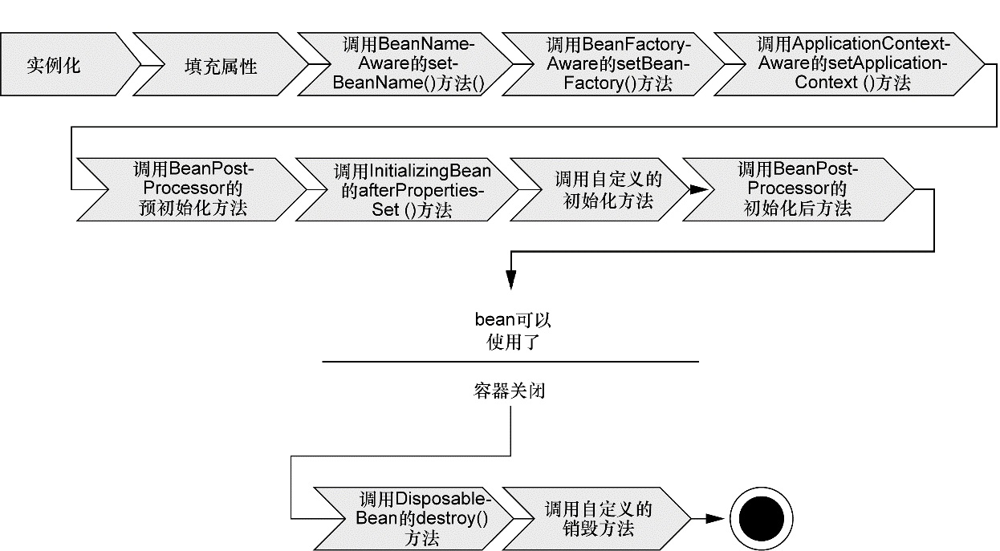

读书笔记：Spring实战——第一章
在这一年的Java开发中，Spring boot系列的东西已经用的不少了，但写代码基本都是依靠经验。debug也只能复制报错信息上网查。因此决定学习一下spring底层的原理。从《Spring实战》这本书开始。
spring是一个开源框架，他可以简化企业级应用的开发。在代码改动最小的前提下将代码解耦合，简洁易懂。具体通过四种关键策略实现：
基于POJO的轻量级和最小侵入性编程；
通过依赖注入和面向接口实现松耦合；
基于切面和惯例进行声明式编程；
通过切面和模板减少样板式代码。
以下介绍就围绕这四个方面进行。
Spring竭力避免因自身的API而弄乱你的应用代码
很多框架通过强迫应用继承他们的类或者实现他们的接口从而导致应用与框架绑死。但是Spring正好相反，在基于它构建的应用中，它的类通常没有任何痕迹表明你使用了Spring。最坏的场景是，一个类或许会使用Spring注解，但它仍旧是POJO。
那么Spring是如何在不依靠继承和接口实现的情况下发挥作用的呢？那就是通过DI（依赖注入）来装配POJO们。以下介绍DI是如何帮助应用对象之间保持松散耦合的。
依赖注入
依赖注入解决的最大问题就是代码耦合。以骑士的生活为例。我们可以把他要做的事情抽离成一个任务，骑士
可以拯救公主，也可以斩杀恶龙，去酒馆大吃大喝等等。这些事情只要统一实现任务接口即可。在Spring中，我们可以通过DI来自动组装对象，而不是让骑士来选择任务（这样他或许会变成天天吃喝的猪猪）。代码如下
1 | package com.springinaction.knights; |
现在BraveKnight类可以接受你传递给它的任意一种Quest的实现，但该怎样把特定的Query实现传给它呢？这里我们就要使用装配Bean。创建应用组件之间协作的行为通常称为装配（wiring），Spring有多种装配Bean的方式，最常见的一种是XML。这里我们使用Java代码装配做示范
1 | //核心代码 |
这里可以清晰的看到DI带来的收益：骑士不需要知道quest的类型，也不知道它来自哪里，config作为中间人牵起整个流程。这样的话，就可以在不改变所依赖的类的情况下，修改依赖关系。
如果使用XML文件配置，就选择ClassPathXmlApplicationContext作为应用上下文，并获得对象的引用。
应用切面
DI能够让相互协作的软件组件保持松散耦合，而面向切面编程（aspect-oriented programming，AOP）允许你把遍布应用各处的功能分离出来形成可重用的组件。
面向切面编程也是Spring的一个鲜明特点。
面向切面编程，简单的说就是把一些各组件都有可能需要的功能抽离出来，作为一个模块，然后通过声明的方法来把功能应用到组件上，并且在运行期编织起来，这样不仅起到简化组件代码的作用，同时也将散落在各处的逻辑汇集在一起。
如果将这些功能分散到多个组件中去，你的代码将会带来双重的复杂性。
- 实现系统关注点功能的代码将会重复出现在多个组件中。这意味着如果你要改变这些关注点的逻辑，必须修改各个模块中的相关实现。即使你把这些关注点抽象为一个独立的模块，其他模块只是调用它的方法，但方法的调用还是会重复出现在各个模块中。
- 组件会因为那些与自身核心业务无关的代码而变得混乱。一个向地址簿增加地址条目的方法应该只关注如何添加地址，而不应该关注它是不是安全的或者是否需要支持事务。
AOP能够使这些服务模块化，并以声明的方式将它们应用到它们需要影响的组件中去。
我们可以把切面想象为覆盖在很多组件之上的一个外壳。应用是由那些实现各自业务功能的模块组成的。借助AOP，可以使用各种功能层去包裹核心业务层。这些层以声明的方式灵活地应用到系统中，你的核心应用甚至本不知道它们的存在。这是一个非常强大的理念，可以将安全、事务和日志关注点与核心业务逻辑相分离。
Bean的生命周期
总结
依赖注入和AOP是Spring框架最核心的部分，因此只有理解了如何应用Spring最关键的功能，你才有能力使用Spring框架的其他功能。在本章，我们只是触及了Spring DI和AOP特性的皮毛。在以后的几章，我们将深入探讨DI和AOP。